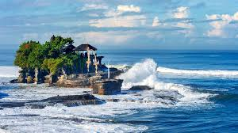
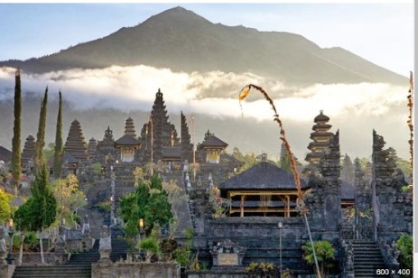
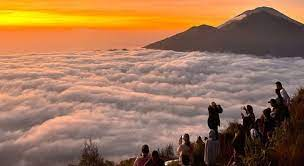
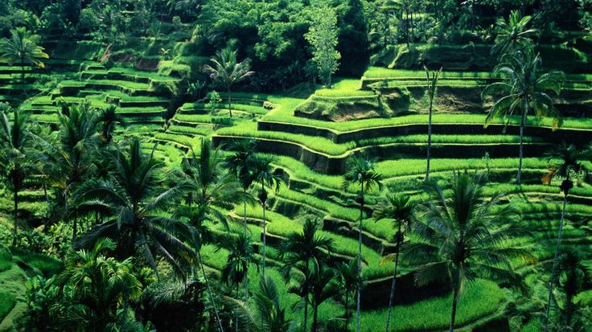
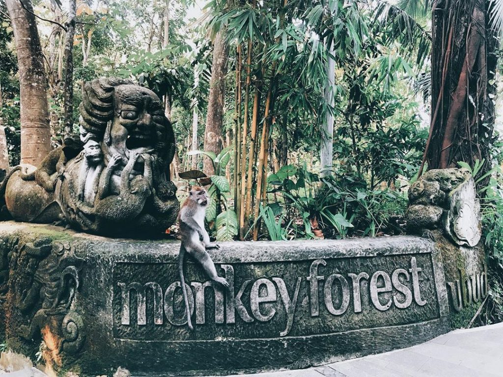
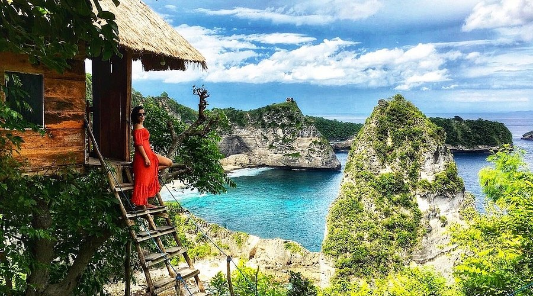

Tentang Bali
Pulau Bali memiliki luas sekitar 5.780 km² dengan topografi yang sangat beragam — mulai dari gunung berapi aktif seperti Gunung Agung, sawah berundak di Ubud, hingga pantai-pantai indah di sepanjang pesisir selatan dan utara.Pulau Bali adalah salah satu ikon pariwisata Indonesia yang telah dikenal hingga ke mancanegara. Terletak di antara Pulau Jawa dan Lombok, Bali sering disebut “Pulau Dewata” karena keindahan alamnya yang memesona dan kehidupan spiritual masyarakatnya yang kental dengan nilai-nilai Hindu. Bali bukan sekadar destinasi wisata, melainkan juga simbol harmoni antara manusia, alam, dan budaya.Pulau ini mampu memadukan keindahan alam tropis, kekayaan seni tradisional, dan keramahan penduduknya, menjadikannya magnet bagi wisatawan lokal maupun internasional.
✨ Mengapa Memilih Bali?
Bali menjadi destinasi wisata yang sangat diminati karena mampu menawarkan pengalaman liburan yang lengkap dan berkesan bagi setiap pengunjungnya. Keindahan alamnya yang luar biasa, mulai dari pantai berpasir putih hingga pemandangan pegunungan dan sawah yang hijau, menjadi daya tarik utama yang memanjakan mata. Selain itu, budaya dan tradisi masyarakat Bali yang masih terjaga kuat menambah nilai unik yang sulit ditemukan di tempat lain. Berbagai upacara adat, tarian tradisional, serta keberadaan pura-pura megah menjadikan Bali bukan sekadar tempat wisata, tetapi juga pusat spiritual dan budaya yang menarik untuk dipelajari. Ditambah lagi, fasilitas pariwisata yang lengkap, keramahan penduduk lokal, serta beragam pilihan aktivitas seperti selancar, snorkeling, yoga, hingga wisata kuliner membuat wisatawan merasa nyaman dan betah berlama-lama di pulau ini. Suasana damai dan spiritual yang khas juga membuat Bali cocok bagi siapa pun yang ingin mencari ketenangan dan inspirasi. Oleh karena itu, tidak heran jika Bali sering disebut sebagai “Pulau Dewata” dan menjadi salah satu tujuan wisata terbaik di dunia yang mampu memadukan keindahan alam, kekayaan budaya, dan kenyamanan modern secara harmonis.
🗺️ Destinasi Unggulan
Ubud

Dikenal sebagai pusat seni dan budaya Bali, Ubud menawarkan suasana pedesaan yang tenang dengan pemandangan sawah terasering. Di sini juga terdapat galeri seni, pertunjukan tari tradisional, dan tempat yoga populer.
Seminyak

Seminyak adalah kawasan wisata yang terkenal dengan suasananya yang lebih tenang dan mewah dibandingkan Kuta. Di sini, wisatawan dapat menemukan deretan vila dan hotel berbintang, restoran elegan, serta butik-butik fashion kelas atas. Pantai Seminyak memiliki pemandangan sunset yang menakjubkan dan sering digunakan untuk bersantai di café tepi pantai seperti La Plancha atau Potato Head Beach Club. Tempat ini cocok bagi wisatawan yang ingin menikmati gaya liburan modern namun tetap santai, dengan kombinasi keindahan pantai dan kehidupan malam yang berkelas.
Canggu

Canggu terletak tidak jauh dari Seminyak dan kini menjadi destinasi favorit wisatawan muda dan digital nomad dari berbagai negara. Kawasan ini terkenal dengan pantai-pantai untuk berselancar seperti Echo Beach dan Batu Bolong, serta suasana pedesaan yang masih asri dengan hamparan sawah hijau. Selain itu, banyak kafe kekinian, tempat yoga, dan spot foto instagramable yang menjadikan Canggu terasa sangat trendi dan santai. Canggu adalah tempat yang ideal bagi wisatawan yang ingin menikmati perpaduan antara alam, seni, dan gaya hidup modern.
Uluwatu

Pura Uluwatu di tebing, tari Kecak, dan ombak besar untuk peselancar.Dikenal dengan Pura Luhur Uluwatu yang berdiri di tebing tinggi menghadap laut. Di sore hari, wisatawan dapat menikmati tarian Kecak sambil menyaksikan sunset yang indah di atas tebing.
Pantai Kuta

Pantai paling terkenal di Bali, terkenal dengan pasir putihnya dan ombak yang cocok untuk berselancar. Lokasinya dekat bandara, sehingga mudah dijangkau. Sore hari, tempat ini menjadi spot favorit untuk menikmati matahari terbenam (sunset).
Tanah Lot
Sebuah pura yang terletak di atas batu karang di tepi laut, menjadi ikon wisata Bali. Saat air pasang, pura ini tampak seperti mengapung di tengah laut. Tempat ini juga terkenal dengan pemandangan matahari terbenam yang menakjubkan.
Pura Besakih
Disebut sebagai “Pura Agung” karena merupakan pura terbesar dan tertua di Bali. Terletak di lereng Gunung Agung, pura ini menjadi pusat kegiatan keagamaan umat Hindu Bali dan memiliki arsitektur yang megah.
Nusa Dua

Daerah ini terkenal dengan resor dan hotel mewah, pantai yang tenang, serta air laut yang jernih. Cocok untuk wisata keluarga atau bulan madu. Di sini juga sering diadakan festival seni dan budaya internasional.
Gunung Batur
Gunung berapi aktif yang menawarkan pemandangan sunrise spektakuler. Wisatawan bisa mendaki ke puncaknya di pagi hari untuk melihat matahari terbit. Di sekitarnya terdapat Danau Batur dan pemandian air panas alami.
Tegalalang Rice Terrace
Terletak di Ubud, tempat ini terkenal dengan pemandangan sawah berundak yang hijau dan indah. Banyak wisatawan datang untuk berfoto atau sekadar menikmati suasana alam pedesaan yang menenangkan.
Sacred Monkey Forest (Hutan Monyet Ubud)
Hutan alami yang menjadi habitat ratusan monyet ekor panjang. Selain berinteraksi dengan satwa, pengunjung juga bisa melihat pura kuno dan pepohonan besar yang sakral di dalam kawasan hutan ini.
Nusa Penida
Pulau indah di sebelah tenggara Bali yang terkenal dengan pantai dan tebing spektakuler seperti Kelingking Beach, Angel’s Billabong, dan Broken Beach. Cocok bagi pecinta petualangan dan fotografi.
Makanan Khas Pulau Bali
-
1. Ayam Betutu

Ayam utuh yang dimasak dengan bumbu rempah Bali dan dibungkus daun pisang, lalu dikukus atau dipanggang lama hingga empuk.
-
2. Sate Lilit

Daging cincang yang dicampur bumbu khas, dililitkan pada batang serai, dan dipanggang hingga harum.
-
3. Lawar

Campuran sayur, kelapa parut, dan daging cincang berbumbu rempah yang biasanya disajikan pada upacara adat.
📸 Galeri Foto Bali